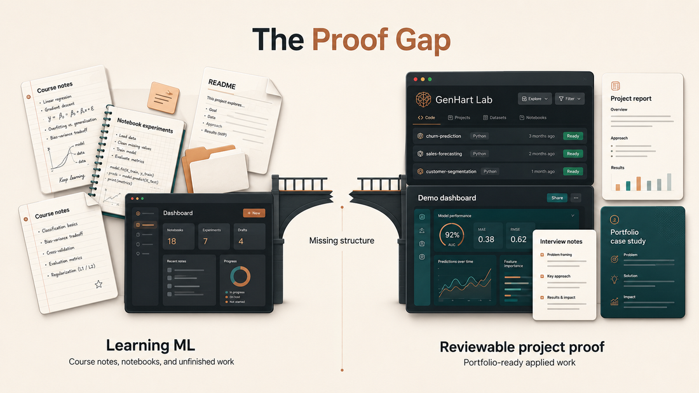

Engineering and Energy Systems
Sensor data, anomaly detection, energy forecasting, predictive maintenance, and system monitoring.
Predictive maintenanceAnomaly detectionEnergy forecasting
Build real projects, portfolio proof, and the confidence to explain your work in technical reviews and interviews.
Many learners complete courses and build notebooks, but still struggle to show they can solve real problems.
GenHart Lab turns scattered learning into structured applied ML workflows: framing, data, modelling, evaluation, deployment thinking, documentation, and interview explanation.

Go beyond notebooks into evaluation, structure, deployment readiness, and communication.
Build around engineering, health, finance, commerce, and customer decision systems.
Turn GitHub, reports, demos, and case studies into work you can defend.
Learn how machine learning supports prediction, monitoring, automation, and decision-making across practical domains.
Sensor data, anomaly detection, energy forecasting, predictive maintenance, and system monitoring.
Risk prediction, explainability, clinical evaluation, and responsible model use.
Fraud detection, credit risk, anomaly monitoring, and threshold-sensitive decisions.
Recommendation panels, segmentation, demand forecasting, ranking, and customer value.
Churn prediction, lead scoring, funnel analytics, campaign performance, and attribution.
Short explainers on how machine learning becomes real project evidence across domains, portfolios, deployment, and interviews.
How domain context changes modelling, evaluation, and project value.
Turn experiments into repositories, reports, demos, and reviewable systems.
Present metrics, trade-offs, limitations, and domain value clearly.
One focused path: learn the workflow, build the project, prepare the evidence.
Problem framing, data work, baseline models, and GitHub structure.
Evaluation, explainability, error analysis, dashboards, APIs, and reports.
Case studies, walkthroughs, final review, and technical storytelling.
Founded by Sean Afamefuna, a Nigerian data and AI practitioner pursuing an MSc in Energy Engineering in Finland.
The lab exists for learners who know the theory, but need project evidence and career confidence.
For learners ready to build serious applied project evidence with structure, feedback, and accountability.
Early cohort pricing. Final pricing may depend on cohort structure, support level, and selected track.
Build applied AI skills that can be shown, reviewed, and defended.